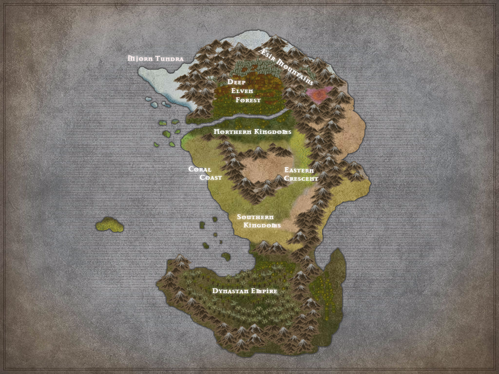

This is the online repository for rules to play the Icara TTRPG. This abbreviated rulebook is divided into the Rulebook sections, which displays the unique mechanics used for play, and the Settings section which contains information about Icara's lore and history.
Character Sheet Overview
This is a summary of the character sheet.
Ability Score Breakdown
This page will explain Ability Scores.
Bloodline page
This page will explain how bloodlines/races work.
Culture and Background
This page will discuss Culture and Background rules
Class - Adventuring Archetypes
Barbarian
Bard
Cleric
Priest
Druid
Fighter
Monk
Paladin
Ranger
Rogue
Sorcerer
Warlock
Essence Binder
Essence Binders use their magic to create or control powerful allies that help them on the battlefield. Using their hex, they empower these allies and force them to do their bidding.
Examples: Artificers who create golems or inanimate beasts, necromancers who control undead minions or brutes, or the warlock who would control a devil or a demon all fall into this category.
Basics:
- This warlock places his hex on a minion to make it stronger or gain control of it in a more permanent way. Unlike traditional summoning spells, this will give the warlock complete control over a minion he can summon or create, at the cost of his bonus action and his hex. If his hex is not placed on a minion, it can be used as he pleases.
Harbringer
Harbringers are agents of vengeance and woe trained to inflict death and misery on a specific enemy. Unlike many warlocks, they will fight toe to toe with their enemies, and they have mastered powerful curses and deadly weapons with which to do so.
Basics:
- This warlock uses weapons that are magical only in their hands to strike their enemies.
- They also use an enhanced hex called a Malediction , which hampers their enemies in multiple ways, relying on a "reverse bardic inspiration" style die that causes the target extra damage not only once per round but once per each source of damage the warlock hits them with. It can also be used to:
- reduce targets movement (by dice x 5 in feet) if they are moving away from the warlock (as a reaction)
- hamper targets attacks if they are attacking the warlock or in melee with the warlock (as a reaction)
- penalize targets saving throws against the warlock's spells. (as a reaction)
- add additional damage to any source of damage to the target. (as a reaction.)
- Potentially allow them to "Doom Clock" an enemy, where once they have damaged their target with the Malediction, they can deal the hex damage as a bonus action without requiring an additional attack or roll to hit. This would count as their "once per round" Malediction action.
Hex Master
The Hex Master is a master of the magics that they know, and can use multiple hexes. In addition, they can use these hexes to impact multiple targets with their magics.
Wizard
Archmage
Archmages focus strongly on mastering a school or set of schools of magic. They tend to get special bonuses when casting spells from that specific school, depending on which one they choose.
Suggested Schools Necromancers, Conjurers, Transmuters are all good fits for Binders.
Sage
Warcaster
Combat
This page will discuss how Combat works
Critical Hits and Fumbles
The world of Icara
Icara is a massive world that sits at a confluence between multiple planes of existence.

Visit the following sections for more information:
- Cultures - A breakdown of the peoples and civilizations that have populated Icara.
- Peoples of Icara
- Calendars
- History of Icara
- Civilizations of Icara
- Pantheons - The gods and religions of Icara
Days, Weeks, Years - The Lunar Cycles and Seasons
It is a long year for the residents of Icara – a years cycle takes around four-hundred and eighty six days. This cycle takes along 18 months, divided into 4 long seasons. There is a very long growing season in Icara, and generally several crops can be brought to fruition during that period. Conversely, there is a very long winter season, and those that cannot store enough food for that long winter are often brought to famine.
Lunar Cycle
The weeks and months are roughly planned by the lunar cycles of the quicker two of the three moons that circle Icara. Isara, the Traveler, glides quickly through the skies, its cool blue light offering illumination on roughly half of all nights. Most travelers can quickly determine the day by its lunar cycle. Elysian, the Lantern, a bright white moon that cycles over the course of the month, gives similar guidance. Mogar, the Silent, slowly phases in and out, but even when directly lit, the black surface sheds little to no light upon the surface.
Seasons and Months
The seasons are split into the spring months of Kaori, Sappara, Akamas and Gaidala. The summer months are Salar, Senegalar, Meldari and Pyrsa, culminating in the summer solstice and festival season of Sylfyri. The long autumn contains the months Avizeri, Kheperi, Soleis and Divisara, which bleed into the cold months of winter; Moharsa, Anemis, Shiaviri and Laisiri. The last month of the year, that of the winter solstice, is the dark and dread Thanata, often known as the starving month for barbarian tribes and farming communities who have not stored enough.
Weekdays
The weekdays (of which there are nine) were worded in ancient dwarven. Meursdoun, Stredoun, Hierthdoun, Sherpdoun, Firgdoun, Thanedoun, Jagdsdoun, Torsdoun and Odoun are all based on days of the traditional dwarven workweek.
In common, these are occasionally shortened to Milday, Streday, Herthday, Sherday, Firgday, Kinsday, Trekday, Feaday and Godsday.
Formally, however, most use the ancient dwarven, as it was adopted by both the Elder races and many of the ancient human kingdoms centuries ago.
Spring


Summer


Fall


Winter


Gods of Icara
The ancient and mighty entities worshipped as the gods of Icara take many forms, but share some defined traits depending on their nature. Gods are often defined or categorized by theologians in the following groups:
Elder Gods
Elder gods have been around for all of recorded history, and are often part of the origin story of Icara itself. Elder gods typically are considered to inextricably tied to Icara itself - the best example these are the elemental gods or the patron gods of the Elder races. Elder gods do not grant an "afterlife" or have a home realm to gather their faithful into. The souls of the servants of the Elders often disappear and cannot be called again after the mortal's death.
Immortal Gods
Immortal gods are from the Outer or Eternal Realms. These gods exist separately from Icara, which is just another battleground for their ideals and worship. They seem to gather power and might from the active worship of their follower, and often grant power to their faithful in return. The followers of the Immortals within the Eternal Realms are typically granted an eternal home in the afterlife, for good or ill.
Ascended Gods
Ascended gods were powerful mortals that ascended into godhood, often definable historical figures, with a few notable exceptions from pre-recorded history. While it is unknown what catalyzes an Ascension, many times throughout history it has been accompanied by a major war, tragedy, or other history-shaping event. Ascended gods tend to exist within their own realm, created or conquered during their Ascension. They may also exist within a Fae dominion or within the Eternal planes. Typically, they have power within this dominion but are not often seen outside of it. The followers of Ascended gods may or may not have an afterlife.
Patrons - Minor Gods or Demigods
Patrons are powerful beings that aren't quite gods or goddesses in their own right, but have significant power and often grant boons to mortals in exchange for their worship or a favor. These can include powerful angels, devils, or demons, as well as high fae or old dragons.
Pantheons of the Gods
#TODO (FILL OUT THE PANTHEON SUMMARIES)
Gods or goddesses within a pantheon are understood to be closely tied to a certain people, and are often primarily worshipped by that people. A god identified as a "Patron God" of a people is believed to have either created that people or to be primarily concerned with their welfare. Other gods or goddesses of that pantheon tend to have definable relationships with the patron god, either as an acolyte or adversary - but all gods or goddesses included within a pantheon are shepherds for their people.
Dwarven Pantheon
The dwarven gods are a relatively unchanging, ancient lot. Dwarves worship their Patron God, Odin, an elder god of great power. They also are protected by mighty dwarven heroes who have Ascended.
Dynastan Pantheon
The Dynastan are protected by the great heroes of their race, and call upon them for guidance when needed. The Dynastan Pantheon is fairly unique in that all of their gods were mortals who Ascended.
Elemental Pantheon
The elemental forces are elder gods. They have been present since the beginning of recorded history, and are worshipped by many different cultures under many different names. Their true ethos and goals are a mystery, as is whether they actually need or desire the many worshippers that have flocked to them. The elemental forces respond to power more than they respond to piety, and are called upon in all walks of life. They do not involve themselves in the petty struggle for power and worshippers that other gods do, which some say shows they are true gods and others claim shows they are simply a force, not a true entity, and prayers in their names are meaningless.
The gods and goddesses of the elemental pantheon tend to draw worshippers of all cultures and peoples. Elementals grant boons, but if they speak directly to their faithful, that's between them. Often, those who worship the primal forces that form the foundation of Icara are left to divine their own magical purposes. Other worshippers accept the words of the fae most closely tied to the elemental dominion that they serve as the words of their masters.
Eternal Pantheon
The Eternal Pantheon includes the Pantheons of the Heavens and the Hells, which contain the gods, devils, and demons who wage war over the souls of mortal men and women in Icara.
Human Pantheon
The humans worship a wide range of gods and goddesses, from the Old Primal Gods to those that Ascended to stand at the side of the Eternals. There are
Moon Elf Pantheon
Orc Pantheon
Sun Elf Pantheon
Tribal Pantheon
Gods without a pantheon are worshipped by a wide variety of peoples that do not seem to show favor to any, or those claimed by multiple races. Alternately, they can be entities about which there is a either conflicting or misleading information, and scholars are unable to determine the true intentions of the god or goddess.
Odin - Patron God of the Dwarves
Titles
Patron God of the Dwarves, The Forge Keeper, The All Father
Ethos
Odin is the favored deity of the craftsman, being it a blacksmith or carpenter. Odin preaches a strict sense of family and of honorable service to one's king, religion, and family. The Forge Keeper expects his followers to be steadfast and determined above all things.
The religion of the dwarves thrives on not complaining, persevering through difficulty, and being honorable in all things. Faithfulness and fidelity are espoused by the priests of Odin, as are temperance of spirit and action. A dwarf is cautioned never to act too swiftly, either in joy or in anger, and to be as a rock for family, friends, and clan. A dwarf is always reminded that they must serve their king first, their father second, their spouse and family third, their friends fourth, and themselves last.
Worship
The priests of Odin are a huge part of the dwarven community. They host gatherings, provide charity as they see it necessary, and counsel dwarves in need. A priesthood calling is not a full time job for any but the most sacred and highest calling, and most priests also serve another function in the community as well, be it baker or soldier. Priests strive to lead by example as much as anything, and consider their actions the model for the community as large. Dwarven priests seek to inspire their fellow dwarf. They are famous for their hymns, deep throated songs sung in unison, which echo and reverberate through the very stone of the earth. They are also famous for their whiskey. Dwarvish Holy Water is stern stuff, thick-bodied and dark like the earth itself. Dwarves view it as the water of life, believing that the sacred brew they create was used at the dawn of time to awaken the stones themselves. Dwarven brewmasters are trained for years, and only after having been ordained by a high priest of Odin are they allowed to create the consecrated intoxicant that is considered the sacred brew of Odin. It is commonly drunk during ceremonies and during dwarvish religion services. Priests expect their parishioners to be somber and reflective during the services, whether drunk or sober, and rude or boisterous activity is to be saved for the drinking hall, not the chapel. In the drinking hall, however, it is considered proper form to live life to the fullest, and enjoy those blessings that Odin has given to the dwarvish people.
Dwarven priests consider coin gathered in their coffers money being handed to them for stewardship, and they seek to use it on the community first. The job-holding priests use their own money for upkeep of the temples of Odin, and to see to their own needs. Because they put the needs of the community over that of their clergy, the priests of Odin are highly respected by many, despite their intoxicating worship ceremonies, and Odin is a welcome presence in the majority of cities.
Symbology and Iconography
#TODO(Symbols)
Temples
#TODO(Temples)
History
Odin is an Elder god. Like Jarallan, he was granting strength to his faithful before history was being recorded. The dwarves claim that he created Icara, shaping it on his great Forge, then crafting the creatures out of clay and imbuing life in them with his life-giving elixir - potent, god-brewed liquor. He then set them about their work. These were the first dwarves. Dwarves then claim that Odin created other creatures to cover Icara. They don't often believe that Odin created the other people of Icara, believing all gods created their own peoples to inhabit the perfect world that Odin created, but a few do allow that "a tip too many of the flask would account for the elves, after all".
Odin is a fairly demanding god, expecting his people to ever strive for personal perfection and ever=greater heights of service to others. Many a snide dwarf has commented on the irony that the dwarf strictly sets out rules of behavior for himself, ever seeking to govern their own impulses, while the elf sets out rules of behaviors for others and caters to their own impulses whenever the fancy strikes. Odin's strict rules on tradition and fealty leave little wiggle room for change, and his doctrine has stayed consistent for centuries.
Source of Divinity
#TODO(Source)
Souls of Followers
#TODO(Souls)
Thor - God of Battle
Titles
God of Battle, God of Thunder
Ethos
#TODO(Moved Ethos to Worship, worship to Temples.)
Worship
Thor is the god associated with battle, tempest, lightning, thunder, chaos, and bravery. Prayers are offered to him generally in times of dire need, or in times when courage is needed. Thus, he is often prayed to by soldiers of the eve of a dangerous battle, or during a time of great hardship (such as when a mine collapses, or another natural disaster threatens). Dwarves tend to evoke Thor's name whenever there is any sort of elemental disaster, from fire and frost to lightning or flash floods.
Thor's worship includes deep drinking as a religious exercise. The taunts and jeers raised in a drinking hall usually invoke his name. Dwarves who would never take Odin's name in vain even on pain of death will swear at Thor until they're blue in the face without a second thought. There is little held sacred about Thor, but dwarves have much respect for the lightning thrower.
Symbology and Iconography
#TODO(Symbols)
Temples
Thor rarely has his own temples. He will often have an altar in Odin's temple, or small shrines at fortresses, castles, or other military outposts. Many priests of Odin respect and encourage worship of Thor, though more paladins and fighters worship Thor than priests do.
History
Thor first made his presence known in the Age of Blood, during the Titan Wars. He made a great name for himself as a dwarvish champion. He wasn't so much a brilliant tactician as an unstoppable warrior, who smashed the giants and ogres as if they were kindling, wading through lines of enemies with devastating efficiency. Thor was a tireless combatant who cheerfully slew enemies from sunrise to sunset, according to the dwarven legends. If he was angered, he became even more ferocious, smashing his foes with great claps of thunder and splitting them with lightning strikes. Thor was at the forefront of the offensive that eventually killed the titan who was leading the armies against dwarven kind. His ascension took place in the titan's enormous palace, as Thor used his hammer to smash the giant's tremendous greatsword, and then blasted the titan's skull with the very next swing. Witnesses say that Thor simply rose up afterwards, crackling with power, until a tremendous lightning bold split the earth where he floated. When the smoke cleared, Thor was gone, never to be seen in the worldly realm again.
Many dwarves do not believe that Thor was ever truly mortal. They believe that he is the son of Odin, come to Icara against his father's wishes to help contain the threat to his father's people, and that he returned to his father after the threat was destroyed. There has never been any official dispute to this by the high priests of Odin, but many scholars state that even if a dwarf had ascended, the stubborn and traditional-minded dwarves would work to tie the new god into their existing religion anyway.
Source of Divinity
Ascended God residing in the Sacred Undermountain
Souls of Followers
Draken - Patron God of Dynastan
Titles
Patron God of the Dynastan, God of Strength, Chain Breaker, God of Freedom
Ethos
Despite his appearance, which in itself would strike many unaware adventurers as a statue or idol to a demon, Draken is a good god. He espouses protection of the weak by the strong, unity in all things, and strength in the face of adversity. Draken also preaches order and civilization, and tasks his followers in preserving both.
Worship
Draken has little in the way of formal worship. He is spoken of with respect, and his insignia or likeness graces many informal family chapels and shrines within the Dynastan Empire. While many Dynastan pray to Draken, without a formal church there is little in the way of organized direction for his worshippers.
Draken extends himself as a presence, if at all, and there is no recorded history of him appearing as an avatar. Since the Dynastan themselves seem to view Draken much as a revered prophet, scholars tend to do the same. However, his godhood appears to be a given for the Dynastan people, who think of him as a messiah.
Symbology and Iconography
#TODO(Symbol)
Temples
#TODO(Shrines?)
History
Draken is an Ascended god. His historical presence is strong even in what little was recorded by the Dynastan people during their early history. He brought all Dynastan together beneath him, and along with Tyranus established the structure of society that still exists to this day. He guided his people through many severe threats to the Dynastan, from rival civilizations to near apocalyptic events, such as the mighty dracolich that threatened the young race with extinction. His deeds were the stuff of legends, and though he didn't live a long life, even as long as a normal Dynastan, what he accomplished cemented the future of the Dynastan as a power in the south. He supposedly met his death at the hands of the enemies of his people, but not even death his dedication. He continues to grant strength and guidance even from his grave.
Source of Divinity
#TODO(Source)
Souls of Followers
#TODO(Souls)
Sylith - God of Conquest
Titles
God of Conquest, God of War, The Bladed Wyrm, The Scaled Emperor
Ethos
A Dynastan god of great influence, Sylith exhorts his followers to conquer and subjugate the world of Icara. It was under the influence of the mortal Sylith that the Dynastan armies that had long served only as a shield for the short-lived empire were forged into a far-reaching and hungry sword.
Sylith's followers worship him as a god of war. Like Draken, the worship of Sylith is less formalized that most religion, though Sylith does have large towers dedicated to his worship in the form of mastery and control. His true believers are fanatical swordmasters that live to battle, ever pushing themselves to greater and greater heights until they inevitably fall in batter. His worshippers believe that, even in the afterlife, Sylith is gathering an army and that your skill and prowess when you die will determine your place in that heavenly host of warriors. The prophets of his church foretell a second coming of Sylith, when he will lead this reborn army across Icara, destroying all who oppose him. Other religions are, justifiably, none too thrilled by the apocalypse scenario threatening their faiths, and Sylith is not often worshipped in conjunction with non-Dynastan gods.
Worship
Sylith's teaching go beyond war itself, also preaching the justification and purpose behind the war. His worshippers preach that strength of arms is the only truth of the world, and that moral or idealistic differences are best settled on the field of battle, where the "correct" ideals are those of the victor. A war fought in Sylith's name is a war of subjugation and plunder, a war to enrich the victors and exterminate the "evil" ideals of the defeated. The Bladed Wyrm doesn't believe in relinquishing the upper hand once a battle is won, and tribute is demanded of those deemed unworthy on the field of combat, a tribute of blood or coin.
For this reason, beyond the fanatic faithful, Sylith is also worshipped by bandits and highwaymen, who justify their own pillage and plunder with Sylith's "Might is Right" philosophy, further tarnishing the civilized world's view even from beyond the Dynastan jungle.
Symbology and Iconography
#TODO(Symbol)
Temples
#TODO(Temples/Shrines)
History
Sylith was a central figure of the Fifth Age. The direct descendant of the mighty Draken, Sylith rallied the Dynastan people into a bloodthirsty frenzy. Enslaving dozens of jungle-dwelling races, they marched forth upon the civilized lands of man. The southern kingdoms were dismissive of the Dynastans as just another horde of monsters, such as the orc or ogres armies that had long been held at bay by the advanced weaponry and tactics of humans, dwarves, and elves. The conquered that managed to survive as slaves quickly learned to appreciate the difference between a Dynastan army and monstrous horde. Sylith was merciless in his tactics, and treated humans and dwarves with no more deference than they had given orcs or goblins. Over the thirty year campaign that Sylith led, millions died at the hands of the Dynastan war machine, and many of the southern lands were returned to nature as they were purged of a population. Those that remained served as staging points for the ever-expanding invasion of the north.
By the time Sylith led his into the northern kingdoms that ringed the southern reaches of the Tarajahan desert, the poor souls within those lands had stockpiled supplies, fortified their defenses, and prepared for a siege as their please of aid from neighboring kingdoms, both great and small, had apparently been ignored. However, an unexpected answer to their pleas came as the Dynastan stood upon their doorstep in the form of a storm the like of which had never been seen, and has never been seen since. Sleet, blizzard, and deathly cold descended upon the land for weeks. The blistering, unnatural cold froze many in their bed, killing animals even in hibernation. The decimation of the unprepared Dynastan army was near absolute, with only Sylith and a few of his more stalwart companions surviving. Though the Emperor may have been able to retreat and regroup, or even raise another army, Sylith became unhinged at the deaths of his beloved armies, and charged the battlements of the besiege kingdom alone. In his suicidal wrath, he struck down many humans, dying with hands drenched in blood. The few Dynastan that survived say that, upon his death, a column of flame shot down from the heavens, immolating him and a huge section of the kingdom's castle.
The Ascension of Sylith did little to give him temperance, wisdom, or patience. The Dynastan were drive to war still, by divine prophecy of the fallen Emperor, but the succession of Sylith was brutal, his throne sought by too many as noble houses that claimed the blood of Draken blessed their lineage. By the time the Dynastan army returned to those kingdoms against which their tide had broken, they found themselves facing an army of legions, calls for aid no longer going unanswered. Even with the blessings of their newly ascended God of War, the Dynastans were defeated and slowly driven back through decades of their invasion, deep into the southern jungles until they had to consider a truce or fear for the very foundation of their empire. And so a century removed from fhe Dynastan's emergence into the kingdoms of men, the last vestige of the Scaled Emperor's vision was put to rest with the stroke of a quill.
Source of Divinity
#TODO(Source)
Souls of Followers
Conscripted into Sylith's army in #TODO(Location)
Tyranus - Good of Purification
Titles
God of Purification, God of Purity, God of Burning Light, Hand of the Emperor
Ethos
Tyranus is a Dynastan god whose primary tenants seem to be the extermination of the undead. The God of Purity focuses much attention on the suppression of the dark art of necromancy, and the destruction of the creatures created by it. The disciples of Tyranus are tireless in their pursuit of the undead, and crusades to destroy them can be called by any priest of Tyranus.
Worship
Tyranus has, by far, the most formalized of the Dynastan religion, with temples of worship, written doctrine, and active preaching and conversion taking place within his faith. Tyranus seeks to convert many potent warriors and mages to his ranks for the fight against the living dead, but also converts non-believers simply to provide structure and moral framework to the benefit of society. Of all the fathers of the Dynastan Empire, Tyranus more than most saw the benefit of of a society living not just by laws, but by moral codes as well. As such, what marriage, funeral, and birth rites exist in Dynastan society were created by the religion of Tyranus. Family histories and lineage, now such an integral part of Dynastan culture, are kept because of Tyranus, and are still officially recorded only by priests of the god, though most noble families of any size include a few members of the priesthood who keep the family records.
Tyranus is the one Dynastan god who attracts worshippers of non-Dynastan frequently, as well. No priest is quite so prepared to deal with undeath as those who wield the holy weapons of Tyranus. For this reason, a number of non-Dynastan shrines have sprung up, though the non-Dynastan shrines tend to be focused on only the destruction of the undead, and are more cultish in nature, lacking the scribes and priesthood that Dynastan temples have built up to deal with all the other spiritual needs of the Dynastan people.
Symbology and Iconography
#TODO(Symbols)
Temples
#TODO(Temples/Shrines)
History
Tyranus was a peer of Draken. The highest clergy of his priesthood and few others know the true and terrible history of the Dynastan people, a history that is considered shameful and therefore never taught to the common people, but handed down from high priest to high priest. That truth is that the Dynastan themselves were created by foul necromancy at the hands of a dracolich of unfathomable strength and power. This creature wished to subjugate the world, and through blood sacrifice manipulated the life-force of enslaved dragons, ushering into being a new race of warriors. These warriors he bred and trained to fight for him, and each from birth was bound with blood to serve him. Draken and Tyranus themselves were the greatest achievements of this loathsome army, two beings so steeped in the ancient arcane power and unbridled ferocity of the great wyrms that they were near invincible. At hte head of an army of death that swept life clean everywhere it marched just as the Age of Apocalypse was coming to a close, they harvested souls for the unquenchable thirst of their skeletal god as he traveled with them in gathering the blood sacrifices it desired for its attempt to become a true god.
It was during just such an extermination, the genocide of a great sun elven city, that the Sun magic of the elves allowed Draken to gather his own identity from deep within its necromantic hold, as they tried to burn and dispel the unstoppable reaper that Draken was. That blazing shock of divine pain-inspired freedom allowed Draken to betray his master, and using his knowledge of his dark master's secrets, to destroy the creature utterly.
With the dark necromancer gone, the bonds of the Dynastan people were shattered. Tyranus and Draken, the leaders for so long, set out to create a new life for themselves and their people, with the aid of the Sun Elves, in whom they found ready allies in their attempt to create some good from the evil that had been wrought by their hands. The bitter secret of their creation died with that generation of Dynastan, carried with them to their grave, but the hatred of foul necromancy and the creatures wrought of it was passed on to each new hatchling. Draken and Tyranus organized their society so that it would ever be strong, but would always carry with it that burning brand of hatred, lest another find a way to subvert them once more. So it was that Draken was made Emperor of the newly crafted empire, and Tyranus was made its high priest, creating a religion which was never intended to have a god. Tyranus lived long after Draken had already ascended, but in the twilight of life, the empire stable and complete, he disappeared. Common Dynastan think he ascended then to grant power to his created church, but the high clergy know that he had set out to consecrate the birthing grounds of the Dynastan where he had been created so many years before. Tyranus himself hated gods, since the only thing he had ever known to claim godhood was the black and wicked undead wyrm that had crafted him as a weapon. No one knows what took place at that ancient birthing ground, or even where that unholy site was. What the priests do know is that the man they had worshipped even as a mortal appeared to give them divine strength in their holy war. Speaking praises to the mortal and whispering prayers to the god was an easy transition.
What scholars know is very different, simply that Tyranus was Draken's right hand in forging the Empire. They know he created the church that eventually became his religion as a tool of education and stability to the empire, and that there is a strict hierarchy in place in all aspects of the Empire.
Source of Divinity
#TODO(Source)
Souls of Followers
#TODO(Souls)
Teancu - God of Law and Purity
Titles
Glorious Dawnbringer, Lord of Heaven, The Golden God, The Voice and The Fury, The Lightbringer
Ethos
Teancu expects a strict and strident path for his people of bravery and unwavering loyalty. He exhorts them to be ever vigilant of evil, to burn out the wicked among them, to banish heretics, and put evil to sword. He expects them to bring glory and power to his name, and to raise the state of Icara to that of the High Heavens.
Worship
Teancu's tenants are simply stated. Purification. Sanctification. Glorification. The radiant Lord of the Heavens exhorts his followers to eradicate the non-divine in their midst, both of the infernal taint of the abyss, evil or sinful peoples or things, and conversion of those deluded by false gods and prophets.
Bane - God of Doom
Titles
God of Doom, God of Destruction, Lord of Apocalypse, The One King, The Black Emperor
Ethos
The tyrannical God of Destruction rules over a religion of coercion and conquest. Bane is depicted as a knight or king, with either spike laden armor made of black iron or a skull-adorned set of regal attire, depending on the cult. He has been depicted as a human, a demon, a skeletal knight, and many more terrifying creatures in religious art.
The priests of Ban and the god himself seek no less than the total domination of the world. The worshippers of Bane believe that mortals are foolish, confused creatures incapable of making the most basic decisions concerning truth. They believe that mortals are incapable of distinguishing between "good" and "evil", and can live in peace only under overwhelming force of a common master. For this reason, there may not be equals to the One King, Bane. The faithful of Bane teach that truth is what their dark master commands it to be, for there can be no universal truth, only the truth of Bane's law.
Worship
Bane's followers live in a very hierarchal fashion. Rebellion is not tolerated, free thinking is not tolerated, because what is "lawful" or "unlawful", "good" or "evil" is determined by your leader. The only basic right granted to the followers of Bane and their subjects is the right to life if total obedience is given. Bane's faithful create society and civilization by suppressing the selfish and conflicting desire of the masses, uniting them in worship of Bane.
Devoted followers of Bane are very demanding and intolerant of their charges. Children and spouses are often considered little more than property, and individuals of lower rank or station are dealt with brutally. Control is established with an iron fist, and high priests of Bane are known to resort to all manner of methods to preserve their stranglehold on a a people or region. This includes causing troublesome individuals to simply disappear, as well as dividing families and moving them all to different parts of the world, or shipping a native people to a far off foreign location, separating them from allies and and the comforts of home to aid in controlling them. They richly reward those who would turn in free thinkers and revolutionaries, seeking to create an atmosphere where subjects only feel safe trusting Bane's dark servants. Important political persons are held in check through blackmail or threats to loved ones. Bane's priests have never shirked from torture, considering pain and suffering a valuable scourge of evil thoughts. Their dark magic is said to have even more severe methods, from mind control to voiding a person's mind and soul altogether, leaving them a compliant husk more than a person.
What cannot be controlled is put to the torch. Bane's disciples are quick to war, quick to punishment and execution, quick to genocide. Societies or peoples that are considered undesirable are destroyed without question, others are given the simple choice of renouncing all other religion and following Bane or being put to death. In societies were Bane is relegated to a cult status, cultists will slaughter families so they can steal babies and children to begin the indoctrination of the youth in the ways of Bane, preserving their religion when they cannot convert otherwise.
The religion presents an uncomfortable thorn in the side of many civilizations, as the followers of Bane can appear lawful, and even to present a stabilizing force in a region. The warriors of Bane have quelled uprisings, wars, and military threats, their beneficence belying their sinister nature. Their darker acts are often kept under wraps, performed in secret, as Bane waits patiently for his priests to build up power and influence in a region. Kings and those in power are swayed by the message of Bane, that he with the most power is the one true law, believing the doctrine to suggest that they will be the ones to continue to rule their land. A wise kingdom recognize, however, that the servants of Bane serve only one master, and that each kingdom that has fallen under the sway of the Dark Emperor has become another joyless, grim pit of endless toil and constant fear.
#TODO (Presence or Avatar)
Symbology and Iconography
#TODO (Symbology)
Temples
#TODO (Temples)
History
Bane is a figure of the Fourth Age. Some might argue that he was the catalyst for the Fourth Age, as the powerful mage king set about the world with an army to convert or destroy all he could get his brutal hands on. His armies expanded ever onward, indoctrinating humans, elves, dwarves, orcs, ogres, giants, and dragons. They subverted those that could be subverted, enslaving those that could be enslaved, and killing those who could not be managed any other way. Often, though, the mage king would raise those among the slaughtered to join his army as undead warriors. Kingdom after kingdom was razed, and with each that fell Bane's armies and power grew. A terrifying figure, the man who became known as the Apocalypse personified towered above his warriors wielding a massive blade imbued with earth-rending power. His own magic was the match of all but the most powerful of the mage kings, and it seemed for a long while that we could subsume Icara completely.
Bane never had that chance. En route through a series of kingdoms of little consequence, he was destroyed in the depth of night in a massive spell blast, consuming him and his closest warriors. No one knows what stopped his hellish march of conquest, but there are many theories. One is that he was visited by Tyr, and destroyed by the wrath of the angry god. In a similar vein, it is supposed that Toren (who's ascension had been the result by Bane's attack on his city) may have visited his revenge upon him. Others say that the most powerful of the mage kings, Magus, struck him down before he could turn his vast armies on Tarajah. It is also theorized that Bane, always one to push the boundaries of his magical prowess, simply destroyed himself while concocting some hellish ritual. Other believe that Bane's death was his own plan, sacrificing himself and his best warriors to cement his status as a god. After his Ascension, his army was scattered, but many continued to serve their dark lord. It's noted that many demons joined in the worship of Bane after his Ascension, and many fear that the Lord of Apocalypse was simply extending his reach from the conquest of Icara, to that of all of reality.
Source of Divine Power
Ascended god #TODO (add location)
Souls of Followers
Loki - God of Mischief
Titles
God of Thievery, God of Mischief, God of Luck, God of Daring, The Trickster
Ethos
It's a rare temple, but a common guild house that holds an idol of the Trickster. Hardened thieves and treasure hunters call to him for luck, and children sing his name in boisterous tones while skipping across the streets of large cities. The lawless God of Thieves tenants are not of an evil god, as he exhorts kindness to the young and helpless and mercy to those you can grant it, but neither are they those of a good god. Loki shines favor on the bold and daring, as well as the clever. Those who take risks are his favorite. While he frowns on exploiting the poor or the weak, he has no problem victimizing the wealthy, swindling a peer, or embarrassing the proud or foolish.
#TODO (Presence or Avatar)
Worship
Those who worship Loki exclusively are usually high-profile thieves and practical jokers that do their best to shake up the society of those they victimize. Loki is one of the easiest gods to casually worship, since he asks nothing of his worshippers and espouses a "if it feels good, do it" type of philosophy, generally. However, should he happen to favor a follower with a "divine quest" (usually demanding a masterful prank or theft of a priceless artifact), the price of piety can increase dramatically.
Symbology and Iconography
#TODO (Symbol)
Temples
#TODO (Temples)
History
Loki was a famous thief in the Third Age, the Age of Reason. No matter the stake, no matter the odds, the Trickster seemed capable of stealing the most well-guarded treasures. No mage king terrified him, no empire's treasury too sacred to be looted, he seemed to be on a quest to steal the best-guarded secrets and treasures from around the world. Legends of Loki's lair survive to this day, tales of a cavern of endless wealth to titillate and inspire treasure hunters. He conspired to steal countless items of power forged by the mage kings, leaving his trademark calling care of a gold key in a silver lock at each site. Try as they might, the wronged kingdoms could never track him down, no matter how much gold was proffered as a reward. Eventually, the master thief simply disappeared. It was assumed that his legendary luck had eventually run out... until his golden key began appearing on holy symbols and prison yard tattoos. Some say that he had snuck into heaven and stolen an item of immeasurable power from the gods themselves. Others, paying heed to a persistent rumor that Loki was the divine offspring of Bhaal, simply said that he had grown weary of playing mortals for fools and had returned to the plan from whence he came.
Source of Divinity
#TODO (DO IT)
Souls of Followers
#TODO (DOES HE EVEN DO THIS???)
Toren - God of Protection
Titles
God of Protection, God of Virtue, God of Redemption, God of the Shield, The Preacher, The Judge
Ethos
Another god commonly called upon by warriors, Toren espouses many virtues, especially prizing loyalty, as well as defending the weak and helpless. The weak should be protected. The hungry, fed. The homeless, sheltered. Above all, Toren preaches redemption of sinners. Minor sins include: lack of compassion for the less fortunate, lack of humility, laziness, gluttony, capriciousness, petulance, greed, and envy. Serious sins include: theft, fornication, violence against the weak or unfortunate, and oppression of the unfortunate (through starvation or deprivation). Of all sins, betrayal and disloyalty are considered to be the most dire, and the only sins which a priest of Toren would find nigh unforgivable. Toren's priests teach penance and repentance for sins, and are usually quite vociferous in their attempts to bring the population to the light. Words and deeds are considered of equal import in the attempts to bring the godless to redemption.
Worship
Worshippers of Toren are generally warriors or warrior priests. Because so much of the faith is based on protecting the downtrodden, priests and monk of Toren keep themselves fit and able. Sloth and laziness is frowned up on in the order. Also, thought the church itself can acquire wealth, the individual gathering on wealth is considered sinful and priests keep only what is necessary for their needs, which may vary depending on how they serve the church. Worship of other gods is frowned upon, for the simple reason that priests of Toren consider other gods misguided, and believe that true peace and redemption will only be found through Toren. Toren himself never appears as an avatar, but is often found as a presence. Priests fighting in his name can sometimes find themselves invulnerable to pain or damage.
#TODO (REVIEW BELOW)
Additionally, the priests of Toren often serve the downtrodden in their communities, providing food and shelter to the less fortunate and guiding the hands of their more affluent followers to provide as well.
Toren is often worshipped alongside Venus and Tyr, much to his chagrin, as part of the Trinity.
Symbology and Iconography
#TODO (HOLY SYMBOL)
Temples
#TODO (TEMPLES)
History
Toren is an Ascended god, his ascension a matter of historical record as it occurred during the Fourth Age. A devout and merciful king in a large kingdom south of Tarajah, Toren and his knights defended many helpless refugees and displaced individuals from all walks of life. As his city swelled in number, it began to gain notoriety around the world as a sanctuary from the power-mad Mage Kings. When, eventually, Bane turned his hand and armies against the scattered people who had escaped him, the might king and his powerful Shield Knights fended off the depraved Lord of Apocalypse. The city held until the betrayal of Archen, one of the king's inner circle of knights, left the besieged city vulnerable. Legend disagrees as to what happened next. The priests of Toren claim the entire kingdom was then lifted, and all of its citizens ascended to heaven and peace. Some scholars believe that only the king and his knights and soldiers ascended, leaving tens of thousands of citizens to be slaughtered by the merciless knights of Bane. This was the direct claim of Bane directly after the ascension, recorded by historians of the era. The powerful mage claimed to the world that the king had fled like a coward, leaving his people to be slaughtered as they begged for their good king's aid. Scholars disagree on whether the combined desperate pleas of his people let to the ascension, or whether Toren truly was mighty enough to pull an entire city to salvation. The truth is unknown, but what is known is that the priests of Toren will try to execute a follower of Bane simply for the heresy of their religion, and that followers of Bane hold a special emnity for The Preacher, as well.
Source of Divinity
Ascended god dwelling in the Heavens
Souls of Followers
Claimed souls dwelling in the Celestial Heavens
Tyr - God Of Justice
Titles
God of Justice, God of War, God of Law, Lawbringer
Ethos
The god Tyr rewards those of strength, courage, and steadfastness. He smiles upon honor and truthfulness in word and deed, and being honest and fair. As such, he is called upon by humans from the warriors in the field to the judges and kings of the realm. He expects fidelity and loyalty from his worshippers, not just in their dealings with him, but also in their dealings with each other. As such, theft, murder, dishonorable war, killing of the weak or helpless, disrespect of elders or superiors, and disobedience are all frowned upon by his priests. Obviously, the opposite is held in high regard, and he especially smiles on excellence and courage. He is generally regarded as a good god, and few societies ban his worship. Those that do generally do so because of pacifist leanings, or worship of an opposing god.
Worship
#TODO (ADD EXPENSIVENESS SOMEWHERE????)
Typically, worship of Tyr is a very noticeable and public endeavor. He encourages his followers to build places of worship and to undertake good deeds in his name. His religions tend to have a very organized structure, with priests, bishops, and leaders elected or chosen based on their prominence. His worship does not forbid or preclude worship of other gods as long as they are not aligned against Tyr.
Tyr himself liberally rewards his worshippers with spells and protections. His presence is very active in his places or worship, and he has been known to appear as either a presence or an avatar. As a presence he tends to be inspirational and empowering to his followers, and as an avatar he tends to appear as a giant golden warrior, wreathed in flames.
Tyr is often worshipped alongside Venus and Toren as part of the Trinity.
Symbology and Iconography
Most prominent is a plate armored fist holding the scales of justice, though there are several variations wielding swords.
Temples
#TODO (DESCRIBE TEMPLES)
History
Tyr is always depicted as human, and is considered to be a human god, though he does allow worship by those of other races. He is the first known god of the human people, and as such is often referred to as their patron god. Tyr was first known to man as a god that was worshipped for strength in war, during the Age of Blood. In that time many crusades were fought, and many great victories were won, but many massacres and atrocities were also committed in his name. The tenants of justice that he now espouses seem to have been added at a later date, leading some scholars to speculate that the Tyr known to man now actually replaced the original god of War. If so, he retained the name and worshippers of the prior god. This, of course, is considered blasphemy by the current priests of Tyr, and those scholars can be tried and executed in the more extreme cities of worship dedicated to the god.
Source of Divinity
Ascended god dwelling in the Heavens
Souls of Followers
Claimed souls dwelling in Celestial Heavens
Venus - Goddess of Mercy
Titles
Goddess of Mercy, Mother of Mercy, Goddess of Healing, Queen of Peace
Ethos
The beloved human goddess of healing is a goddess of mercy and kindness. The worshippers of the goddess do what they can to relieve the suffering of the poor, afflicted, and downtrodden. Cruelty, war, and harsh punishments are frowned upon by the clergy, and they are generally a very forgiving and considerate group. The goddess herself has very few commandments for her worshippers, save that they ease suffering where they see it. Venus has gained a large following among those tired of warfare or strive, and is rarely a religion of an entire city as their policy of forgiveness and mercy doesn't lend itself well to keeping order amongst the citizen, or protecting their walls. Venus is typically considered a good influence, though, and many religions allow the worship, or at least acknowledgement, of the goddess in addition to whatever local religions are present.
Worship
Worshippers of Venus are predominately female, and almost always doctors or herbalists. Nearly every temple to the goddess serves as a makeshift orphanage, hospital, and shelter. The priestesses of healing will rarely, if ever, raise a sword in their own defense, instead relying on the many religions and cities that will do so for them in exchange for the humanitarian efforts in Venus' name. Along these lines, Venus grants many curative and protective spells, but never those of war or death. She makes herself known as a presence, not of protection or power, but a warm sense of acceptance and peace.
Venus is often worshipped in alongside the elven goddess Maayiel, or alongide Tyr and Toren as part of the Trinity.
Symbology and Iconography
#TODO (Holy Symbol)
Temples
#TODO (Temples)
History
#TODO (Maayiel mentioned, change after rename)
Venus is a figure of the Third Age, the Age of Reason. She was a peacemaker and a healer that traveled up and down the face of Icara, attempting to bring attention to the plight of the poor and to heal the afflicted. She is often represented as a stunning blonde in artwork and sculpture, and was renowned for her humility, patience, kindness, and power. It was said that there was no disease she couldn't banish, no would she couldn't heal, and she was sought diligently by the richest and most powerful kings. She denied no one her assistance, be they rich or poor, but she was never tied to any one place or people, traveling to wherever she perceived the greatest need. She is often worshipped in conjunction with Maayiel, an elvish goddess that traveled with her and was also a great peacemaker in her time. The two women apparently vanished in the same time period, and the legends of their deeds soon blossomed into outright worship. There are many legends concerning their disappearance, ranging from immediate ascension for the life of good deeds, to resurrection and ascension after they were killed by orcs, barbarians, or some other foul creature or culture (depending on where the legend is being told). Some scholars deny that Venus ascended at all, since she doesn't manifest herself in any physical way, and they claim that those that worship are simply honoring her memory and siphoning healing magic from another benevolent deity.
Source of Divinity
#TODO (Where does she reside?) Ascended goddess
Souls of Followers
#TODO (What do?)
Godhead - Elder Elementals
The elder races that believe that all elementals are descended from Tyra, or that dwarf and elves were fae descended from the elemental dominions, worship a very different elemental pantheon. The children of Tyra are described as two sets of twins - twin elves and twin dwarves. These gods and goddesses are depicted with much more humanity, guilty of vice and vanity and hubris intact.
The water son is depicted as a caring elven male named Shavar, a gentle god who works to nurture the land and people within it. A stoic soul, he is the warden of the seasons, helping his mother bring the winter frost or the hot summers of Icara. Shavar is endlessly patient with the antics of his twin sister, Aviana, a cheerful, flighty and generous elven female, who spreads joy and merriment, often without thought to the future, and one who can get quite careless with the world when she is caught up in a mood. She gets along well with Pyr agar, a hot-headed dwarf, a genius master craftsman and braggart who works the world forge. Prone to fits of brilliance, rage or destruction followed by periods of deep remorse and sullen inactivity, Pyrus represents reckless rage and power, as well as ambition and pride. His sister Gursla, the elemental goddess of Earth is a quiet an d portly dwarf, one who balances her brothers reckless nature with her own endless calm and wisdom. She is seen as a great baker, builder, matron and engineer, She represents civilization and tradition.
Sacred Sisters Godhead
There are a number of druids, witches and warlocks that worship the elementals directly, believing that the four key elements of fire, water, air, and earth are goddesses of tremendous power, who are are joined and unified in the protection of Icara. The four goddesses serve together to form the primal powers. The
Aviana - a wind sylph who acts as the all seeing watcher and messenger to both her sisters and their followers. Aviana may communicate in the stead of any of her sisters, and she grants physical speed and mental cunning to her faithful. Those who are blessed by her are “quickened†beyond their own abilities. She acts as the advocate of people and represents diplomacy and .
Gaia - an earth sylph whose wisdom and patience weighs oaths and promises, and acts as the lawkeeper of the Godhead. She is the force that withstands and endures, and called upon when endurance and stoicism are needed. She is understood as the bedrock of nature.
Shiva - a sharp tongued and calculating ice sylph, who governs death, decay, and destruction. She is both transcendent and unchangeable. She is called upon by those who seek implacable strength and depthless knowledge, and is known to be the spirit of the unknown and the unknowable.
Pyria - a tremendously vain fire sylph who represents courage, the hunt, hunger, and passion. She is the awe inspiring but short-lived height of beauty and power, and the guardian of birth, renewal, and life.
Aviana - Goddess of Air
Titles
Goddess of Air, Queen of Storms
Ethos
The Goddess of Air is worshipped by those who rely on weather, those who rely on wind, and those would praise the destructive powers of the skies. She is often treated as a goddess of whims and fickle favor, and can be called upon as a goddess of chance. Worshippers of Aviana may also worship lightning, thunder, or other aspects of storms, and is favored and called upon by those who desire fleetness of foot, speed of body, or accuracy. For that reason, she is the patron goddess of runners, acrobats, archers, and similar athletes.
Worship
Worship of the goddess tends to be verbal in nature, though offering may be given. Since there is no physical manifestation of air, unlike fire, water or earth, most worshippers consider eloquent speeches a sufficient form of worship. Shrines to the wind goddess tend to be high, on mountain passes, towers, or near caves where the wind can make a physical impression of some sort. Primarily, Aviana is worshipped by certain cults of elves, seafaring people, and avian humanoids, in addition to receiving situational prayers from sailors and farmers.
Symbology and Iconography
Temples
History
Source of Power
Souls of Followers
Gaia - Goddess of the Earth / Gaus - God of the Earth
Titles
Goddess of the Earth, Primal Mother, Terra, God of the Earth, The Unyielding, Hob the Hidden
Ethos and Worship
The Goddess/God of the Earth is worshipped by farmers and soldiers alike. Those who do not have a specific creation story often believe that all life sprung from Gaia herself. She is worshipped a tad more zealously by those who would live in the earth or depend on the earth for sustenance. She is often worshipped interchangeably with Tyra herself, and makes appearances in many local legends of the civilized nations. Those who believe in her as a goddess tend to focus on her as a goddess of life and nature.
Those who worship the God of Earth tend to worship as a god of strength and stability. They may worship his unchanging nature, ascribe wisdom, patience, or a calm temperament. They often believe that Icara itself sits on the back of Gaus, an earth elemental of tremendous size. The worshippers who fall in this category could be artisans, builders, masons, or monks, scholars or, farmers as well. They may be soldiers, or simply laborers.
Those in the Shadowdeep may worship Hob. Hob is depicted as a spirit or fae who walks unseen among the mortal realm, influencing the world. A trickster god, Hob can be kind or malicious, generous or greedy, depending on his whim. Hob is a common god to goblin and kobold tribes, and is sometimes called on by the powerless to beg for strength or help.
Symbology and Iconography
Temples
History
Source of Power
Souls of Followers
Pyrus - God of Fire / Pyria - Goddess of Fire
Titles
God of Fire, Goddess of Fire, The Ashbringer, Lord of Flame
Ethos
Pyrus represents the deification of the element of fire. Pyrus is often depicted as a towering column of fire, with humanoid features and shape for the upper body. Pyrus does not appear to have any specific ethos or creed, but inspires worship regardless.
Worship
Worship of the elemental god of fire is not uncommon, but there is no universal religion. Some worshippers of the god refer to his flames as cleansing, these worshippers can be a human priesthood dedicated to cleansing a bane (such as undead or demonkind), or an orcish or Dynastan cult that is dedicated to cleansing a particular enemy of their people (such as humans or yuanti), or even a nature priest that believe in the period cleansing of the forest through wildfire.
Others who worship or call upon the fire spirits may do so for the sheer destructive power of flame. Often, these types of cults and religions are magic users or tribal leaders. The rituals of these worshippers vary greatly, from candle or torch lightings to live burnt offerings.
Alternately, many barbarian tribes worship Pyrus as the Ashbringer, a wrathful and murderous god who demands tribute paid to him in flame. These call upon Pyrus to trade life for life, to warm their own bones and extend the "living flame" of their soul by sacrificing weak or captured victims to him in elaborate rituals involving bonfires and covering their own bodies in soot or ash. They often seek a straight exchange of power for their obedience.
Symbology and Iconography
#TODO(Is it just a dang flame?)
Temples
#TODO(Hey I've been to one of these)
History
#TODO(None?)
Source of Power
Elder God
Souls of Followers
Elder gods do not grant an afterlife, souls of their servants often disappear after death.
Shiva - Goddess of Water
Titles
Goddess of Water, Ruler of the Swirling Seas, Goddess of Frost/Ice, Frost/Ice Queen, The Wise Winter Queen, The Secret Holder
Ethos
The varying nature of the Water Goddess ensures that she is called upon by all manner of worshippers from evil cults to merciful priests. To many creatures she is a goddess of life, the guardian of the precious moisture that makes life possible. This worship is most common in desert or agricultural settings. To the sea-dwelling denizens of Icara, Shiva is often considered a fickle and ruthless goddess, called upon for both luck and cursed in fear depending on the weather and will of the winds. The worshipers of the north refer to her as the Frost or Ice Queen, and will often pray to her in the depth of winter. Sentient undead will often worship her under this name, and they as well as others who hurl dark magic may consider her Death itself.
Worship
Rituals for Shiva vary depending on which of her aspects is being worshipped. Religions that consider her a life goddess generally focus on baptisms and ceremonial sacraments of water, along with communal meals. This aspect of Shiva’s worship often focuses on renewal of life and life cycles. Worshippers of a sea goddess are just as likely to toss a curse as a prayer to Shiva, and their offerings tend to be material in nature. Worshippers of the Frost Queen tend to believe her a beautiful, vain, a cold, and deadly deity. These may worship her simply out of respect for her calculated nature, and pray to deaden their passions, emotions, or mortal fears. They also may pray for power only, and the arcane exhortations that drive their dread frost spells are their only true source of communion with their goddess. Worshippers from all walks of life may believe in blessed springs or wishing wells, and their sacrifices vary depending on their local legends.
Symbology and Iconography
#TODO(Symbol)
Temples
#TODO(Bet it looks like Elsa's castle)
History
#TODO(Unrecorded??)
Source of Power
Elder Goddess
Souls of Followers
Elder gods do not grant an afterlife, souls of their servants often disappear after death.